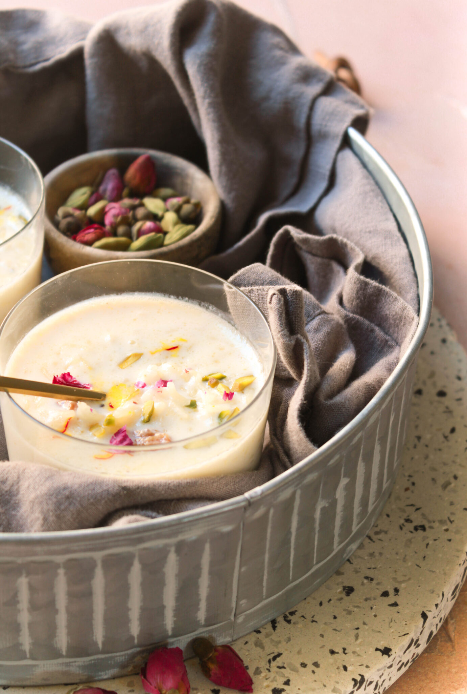

Kheer (Rice Pudding) Recipe

Description
Kheer is a sweet Indian version of rice pudding that is sure to please the whole family. Don't let this simple recipe fool you!
This is sure to be the most delicious rice pudding you've ever tasted!
Prep Time: 5 mins
Cook Time: 30 mins
Total Time: 35 mins
Servings: 4
Ingredients
- 2 cups coconut milk
- 2 cups milk
- 3 tablespoons white sugar
- ½ cup basmati rice
- ¼ cup raisins
- ½ teaspoon ground cardamom
- ½ teaspoon rose water (Optional)
- ¼ cup sliced almonds, toasted
- ¼ cup chopped pistachio nuts
Steps
-
Bring coconut milk, milk, and sugar to a boil in a large saucepan over medium heat.
Add rice, reduce the heat to low, and simmer until mixture thickens and rice is tender, about 20 minutes.
-
Stir in raisins, cardamom, and rose water; cook for a few more minutes.
Ladle into serving bowls and garnish with almonds and pistachios.